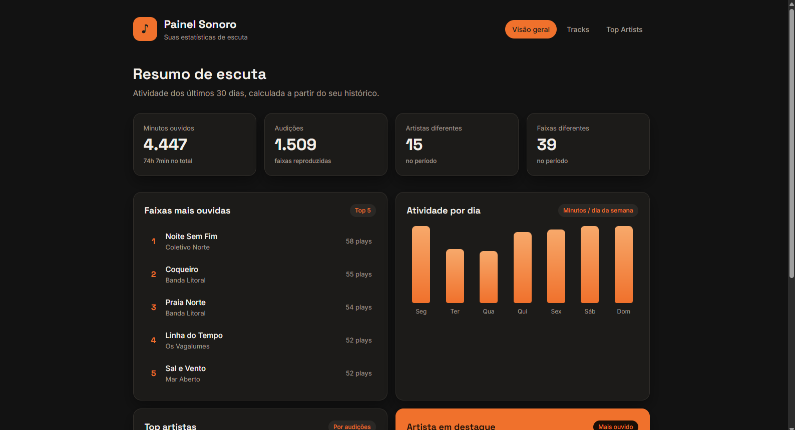
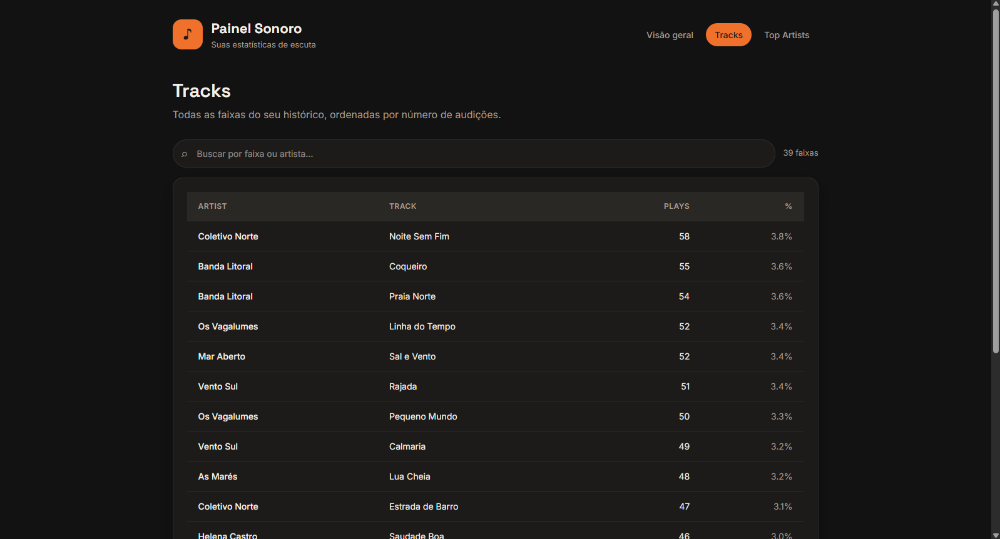
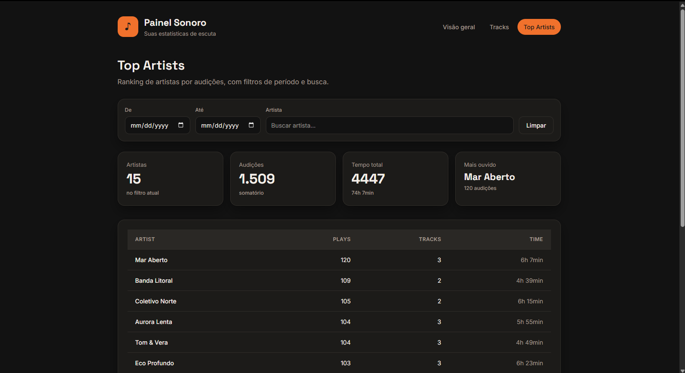

Tracks automatically
Detects what's playing on Spotify in real time. No manual input - just listen to music as you normally do.
A tiny app that tracks every song you play on Spotify, and generates beautiful reports you can explore anytime - not just in December.
Windows 10/11 · Installs in 30 seconds
Install it once. SpoTracker handles the rest.
Detects what's playing on Spotify in real time. No manual input - just listen to music as you normally do.
One click generates an HTML report with your top tracks, top artists, plays per weekday, and recent activity.
All data is stored locally as a CSV file. No accounts, no servers, no cloud sync. Your music habits are yours alone.
~15 MB of RAM. 0% CPU. Lighter than a browser tab. You'll forget it's there.
Runs at startup automatically. Install once, then check your stats whenever you're curious.
Your listening history is a plain CSV file. Open it in Excel, import it into Python, or build your own dashboards.
Real reports generated by SpoTracker. This is what your data looks like.



Fair questions. Here are honest answers.
That warning appears for any unsigned open-source app. The full source code is on GitHub - every line is inspectable. SpoTracker doesn't connect to the internet and doesn't modify Spotify.
Wrapped gives you a fun summary once a year. SpoTracker gives you detailed, track-level data every single day - how many minutes per artist, which songs you skip, your listening patterns by weekday.
No. SpoTracker reads the Spotify window title to detect what's playing. No API keys, no OAuth, no passwords. It works with both Free and Premium accounts.
It uses ~15 MB RAM and 0% CPU. For comparison, a single Chrome tab uses 5-10x more. You won't notice it's running.
Everything about SpoTracker is transparent and free.
Open source code
Data sent to the cloud
Forever, no premium tiers
Quick answers to the remaining questions.
C:\Users\<you>\Documents\SpoTracker\. The listening history is music-list.csv and reports go into the reports subfolder.
Find out what your music says about you.
I love music. I listen to Spotify for hours every day. But I had no idea what I actually listened to - until Wrapped came out in December, and even then it was just a highlight reel.
I wanted to know the real numbers. How many minutes did I spend with each artist? Which songs did I skip? What days do I listen the most? And I wanted to check whenever I felt like it, not once a year.
So I built SpoTracker. A tiny app that runs in the background, tracks everything locally, and gives me beautiful reports on demand. No cloud, no accounts, no data leaving my computer.
If you're the kind of person who checks their Wrapped screenshots months later, this is for you.